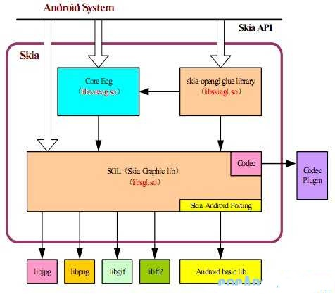
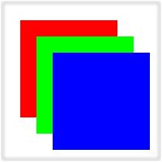

Android 图形绘制（Skia EGL OpenGL ES）
本人对图形学非常感兴趣，本硕期间都是图形学研究方向，目前还没毕业。为了找到好工作，就提前出来实习了。由于工作经验不足，对android图形绘制方面的了解也比较浮浅，希望写出来的东西，不要遭到大家的耻笑和鄙视。
好了，言归正传。
熟悉Windows编程的同志们，可能都知道GDI+是Windows的一套图形绘制库。也就是说Windows系统下，所有图形图像绘制，最终都是通过GDI来实现的。同样，在Android下也需要一套能绘制出点、线、面等复杂图形，或者渲染界面等图像方面的一个可供开发者调用的绘图函数接口，Skia就是这套绘制工具，一套图形图像绘制接口。
Skia是什么？打个比方来说吧，现在让你来画一幅画，比如我们的国画—山水画。画一幅画需要哪些工具呢？从常识上来说，我们需要一张纸，比如白纸，或者带有某些背景图的纸张；需要毛笔，不同型号的毛笔；墨汁；颜料等等。然后我们规定在纸张的哪个区域画图，用什么样的毛笔，用什么样的颜色，画什么样的图形，是点、线、面？还是花草等。
Skia是什么？Skia就是类似上面画图所有需要的一系列设备、工具等。要在Android里画图或者渲染图像，都需要Skia提供的API接口，或者是间接提供。
你可能会问，我在写应用程序里，怎么没看到或者用到Skia这样的函数呢？这个问题并不奇怪，因为你不需要直接控制图形绘制，没有做绘图类的应用，所以你没有用到这方面函数。但是，你所有Activity或者View或者其他控件的显示，在底层都是通过Skia提供的函数进行显示的。常见的Canvas类，假如你跟踪一下代码，会发现，Canvas是通过Native方式，调用底层的SkCanvas的。
我对Skia的理解很肤浅，之所有介绍一下Skia，是为了后续介绍Android下OpenGL ES方面的知识做准备的。因为在Android系统下，通过OpenGL ES绘制的3d图形，最终还是被合并到Skia定义的显示缓存中进行显示的。
Skia在Android系统中所处的位置，如下图：

Skia在android源码里的目录位置：
·头文件(也可以说是internal API,因为google没有在NDK里面提供他)位置：android/external/skia/include。其中还包含以下几个子目录：animator,core,effects,images, views...， 最重要的就是core目录了，我们在这里的分析也主要针对core目录里面的API。
·源文件位于: android/external/skia/src目录，子目录结构和头文件目录相同。
·封装层：android对Skia引擎进行了封装，以便让java代码方便的调用，对skia封装的代码存在于android/framework/base/core/jni以及android/framework/base/core/jni/android/graphics目录下面。主要是对Canvas, Bitmap, Graphics, Picture等等的封装，以及和libui库的结合使用。
关于Skia的介绍，网上有很多，我这里只是简单提下，不是重点。
为了保持结构完整，下面引用网友的，关于Skia的简单调用吧。
include "SkBitmap.hinclude "SkDevice.hinclude "SkPaint.hinclude "SkRect.hinclude "SkImageEncoder.hint main()
{
// Declare a raster bitmap, which has an integer width and height,
// and a format (config), and a pointer to the actual pixels.
// Bitmaps can be drawn into a SkCanvas, but they are also used to
// specify the target of a SkCanvas' drawing operations.
SkBitmap bitmap;
bitmap.setConfig(SkBitmap::kARGB_8888_Config, 200, 200);
bitmap.allocPixels();
// A Canvas encapsulates all of the state about drawing into a
// device (bitmap). This includes a reference to the device itself,
// and a stack of matrix/clip values. For any given draw call (e.g.
// drawRect), the geometry of the object being drawn is transformed
// by the concatenation of all the matrices in the stack. The
// transformed geometry is clipped by the intersection of all of the
// clips in the stack.
SkCanvas canvas(new SkDevice(bitmap));
// SkPaint class holds the style and color information about how to
// draw geometries, text and bitmaps.
SkPaint paint;
// SkIRect holds four 32 bit integer coordinates for a rectangle.
SkRect r;
paint.setARGB(255, 255, 0, 0);
r.set(25, 25, 145, 145);
canvas.drawRect(r, paint);
paint.setARGB(255, 0, 255, 0);
r.offset(20, 20);
canvas.drawRect(r, paint);
paint.setARGB(255, 0, 0, 255);
r.offset(20, 20);
canvas.drawRect(r, paint);
// SkImageEncoder is the base class for encoding compressed images
// from a specific SkBitmap.
SkImageEncoder::EncodeFile("snapshot.png", bitmap,
SkImageEncoder::kPNG_Type,
100);
return 0;
}
编译方式：
g++ \-I./include \
-I./include/core \
-I./include/images \
-Wall -o test-skia test-skia.c \
out/src/images/SkImageDecoder_libpng.o out/libskia.a \
-lpng -lpthread -g
笔者做了简要的批注，大概可知晓Sk开头的这些API的功用，而上述的范例程序一开始就要求Skia配置画布(SkCanvas)，接着透过一份SkRect对象r，给定ARGB的描述，使其有着不同的颜色，再来就是调整向量对象的位移并绘制。正如前文提及，Skia仅是绘图引擎，并未如Cairo一般广泛对应到PDF, X11, GDI等等底层绘图装置，所以为了方便观察绘图结果，我们透过Skia内建的image codec来输出PNG图档，所以执行前述编译后的执行档"test-skia"，应该会得到以下图档：(本无外框与底色，但为了清楚于文章呈现，额外用绘图软件追加)

直接调用Skia函数绘图类似上面的操作，下一章直接介绍OpenGL ES在Android下的应用。